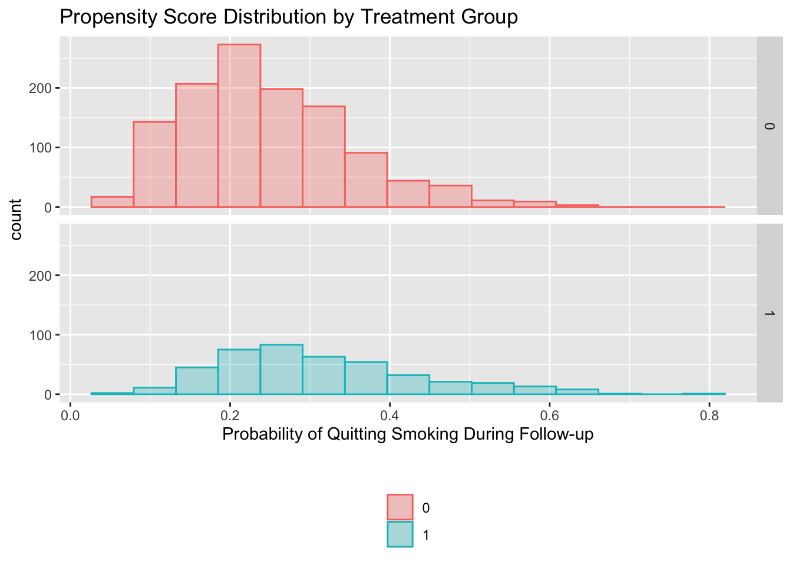

15. Outcome regression and propensity scores
Program 15.1
- Estimating the average causal effect within levels of confounders under the assumption of effect-measure modification by smoking intensity ONLY
- Data from NHEFS
#install.packages("readxl") # install package if required
library("readxl")
nhefs <- read_excel(here("data", "NHEFS.xls"))
nhefs$cens <- ifelse(is.na(nhefs$wt82), 1, 0)
# regression on covariates, allowing for some effect modification
fit <- glm(wt82_71 ~ qsmk + sex + race + age + I(age*age) + as.factor(education)
+ smokeintensity + I(smokeintensity*smokeintensity) + smokeyrs
+ I(smokeyrs*smokeyrs) + as.factor(exercise) + as.factor(active)
+ wt71 + I(wt71*wt71) + I(qsmk*smokeintensity), data=nhefs)
summary(fit)
#>
#> Call:
#> glm(formula = wt82_71 ~ qsmk + sex + race + age + I(age * age) +
#> as.factor(education) + smokeintensity + I(smokeintensity *
#> smokeintensity) + smokeyrs + I(smokeyrs * smokeyrs) + as.factor(exercise) +
#> as.factor(active) + wt71 + I(wt71 * wt71) + I(qsmk * smokeintensity),
#> data = nhefs)
#>
#> Coefficients:
#> Estimate Std. Error t value Pr(>|t|)
#> (Intercept) -1.5881657 4.3130359 -0.368 0.712756
#> qsmk 2.5595941 0.8091486 3.163 0.001590 **
#> sex -1.4302717 0.4689576 -3.050 0.002328 **
#> race 0.5601096 0.5818888 0.963 0.335913
#> age 0.3596353 0.1633188 2.202 0.027809 *
#> I(age * age) -0.0061010 0.0017261 -3.534 0.000421 ***
#> as.factor(education)2 0.7904440 0.6070005 1.302 0.193038
#> as.factor(education)3 0.5563124 0.5561016 1.000 0.317284
#> as.factor(education)4 1.4915695 0.8322704 1.792 0.073301 .
#> as.factor(education)5 -0.1949770 0.7413692 -0.263 0.792589
#> smokeintensity 0.0491365 0.0517254 0.950 0.342287
#> I(smokeintensity * smokeintensity) -0.0009907 0.0009380 -1.056 0.291097
#> smokeyrs 0.1343686 0.0917122 1.465 0.143094
#> I(smokeyrs * smokeyrs) -0.0018664 0.0015437 -1.209 0.226830
#> as.factor(exercise)1 0.2959754 0.5351533 0.553 0.580298
#> as.factor(exercise)2 0.3539128 0.5588587 0.633 0.526646
#> as.factor(active)1 -0.9475695 0.4099344 -2.312 0.020935 *
#> as.factor(active)2 -0.2613779 0.6845577 -0.382 0.702647
#> wt71 0.0455018 0.0833709 0.546 0.585299
#> I(wt71 * wt71) -0.0009653 0.0005247 -1.840 0.066001 .
#> I(qsmk * smokeintensity) 0.0466628 0.0351448 1.328 0.184463
#> ---
#> Signif. codes: 0 '***' 0.001 '**' 0.01 '*' 0.05 '.' 0.1 ' ' 1
#>
#> (Dispersion parameter for gaussian family taken to be 53.5683)
#>
#> Null deviance: 97176 on 1565 degrees of freedom
#> Residual deviance: 82763 on 1545 degrees of freedom
#> (63 observations deleted due to missingness)
#> AIC: 10701
#>
#> Number of Fisher Scoring iterations: 2
# (step 1) build the contrast matrix with all zeros
# this function builds the blank matrix
# install.packages("multcomp") # install packages if necessary
library("multcomp")
#> Loading required package: mvtnorm
#> Loading required package: survival
#> Loading required package: TH.data
#> Loading required package: MASS
#>
#> Attaching package: 'TH.data'
#> The following object is masked from 'package:MASS':
#>
#> geyser
makeContrastMatrix <- function(model, nrow, names) {
m <- matrix(0, nrow = nrow, ncol = length(coef(model)))
colnames(m) <- names(coef(model))
rownames(m) <- names
return(m)
}
K1 <-
makeContrastMatrix(
fit,
2,
c(
'Effect of Quitting Smoking at Smokeintensity of 5',
'Effect of Quitting Smoking at Smokeintensity of 40'
)
)
# (step 2) fill in the relevant non-zero elements
K1[1:2, 'qsmk'] <- 1
K1[1:2, 'I(qsmk * smokeintensity)'] <- c(5, 40)
# (step 3) check the contrast matrix
K1
#> (Intercept) qsmk sex race
#> Effect of Quitting Smoking at Smokeintensity of 5 0 1 0 0
#> Effect of Quitting Smoking at Smokeintensity of 40 0 1 0 0
#> age I(age * age)
#> Effect of Quitting Smoking at Smokeintensity of 5 0 0
#> Effect of Quitting Smoking at Smokeintensity of 40 0 0
#> as.factor(education)2
#> Effect of Quitting Smoking at Smokeintensity of 5 0
#> Effect of Quitting Smoking at Smokeintensity of 40 0
#> as.factor(education)3
#> Effect of Quitting Smoking at Smokeintensity of 5 0
#> Effect of Quitting Smoking at Smokeintensity of 40 0
#> as.factor(education)4
#> Effect of Quitting Smoking at Smokeintensity of 5 0
#> Effect of Quitting Smoking at Smokeintensity of 40 0
#> as.factor(education)5
#> Effect of Quitting Smoking at Smokeintensity of 5 0
#> Effect of Quitting Smoking at Smokeintensity of 40 0
#> smokeintensity
#> Effect of Quitting Smoking at Smokeintensity of 5 0
#> Effect of Quitting Smoking at Smokeintensity of 40 0
#> I(smokeintensity * smokeintensity)
#> Effect of Quitting Smoking at Smokeintensity of 5 0
#> Effect of Quitting Smoking at Smokeintensity of 40 0
#> smokeyrs
#> Effect of Quitting Smoking at Smokeintensity of 5 0
#> Effect of Quitting Smoking at Smokeintensity of 40 0
#> I(smokeyrs * smokeyrs)
#> Effect of Quitting Smoking at Smokeintensity of 5 0
#> Effect of Quitting Smoking at Smokeintensity of 40 0
#> as.factor(exercise)1
#> Effect of Quitting Smoking at Smokeintensity of 5 0
#> Effect of Quitting Smoking at Smokeintensity of 40 0
#> as.factor(exercise)2
#> Effect of Quitting Smoking at Smokeintensity of 5 0
#> Effect of Quitting Smoking at Smokeintensity of 40 0
#> as.factor(active)1
#> Effect of Quitting Smoking at Smokeintensity of 5 0
#> Effect of Quitting Smoking at Smokeintensity of 40 0
#> as.factor(active)2 wt71
#> Effect of Quitting Smoking at Smokeintensity of 5 0 0
#> Effect of Quitting Smoking at Smokeintensity of 40 0 0
#> I(wt71 * wt71)
#> Effect of Quitting Smoking at Smokeintensity of 5 0
#> Effect of Quitting Smoking at Smokeintensity of 40 0
#> I(qsmk * smokeintensity)
#> Effect of Quitting Smoking at Smokeintensity of 5 5
#> Effect of Quitting Smoking at Smokeintensity of 40 40
# (step 4) estimate the contrasts, get tests and confidence intervals for them
estimates1 <- glht(fit, K1)
summary(estimates1)
#>
#> Simultaneous Tests for General Linear Hypotheses
#>
#> Fit: glm(formula = wt82_71 ~ qsmk + sex + race + age + I(age * age) +
#> as.factor(education) + smokeintensity + I(smokeintensity *
#> smokeintensity) + smokeyrs + I(smokeyrs * smokeyrs) + as.factor(exercise) +
#> as.factor(active) + wt71 + I(wt71 * wt71) + I(qsmk * smokeintensity),
#> data = nhefs)
#>
#> Linear Hypotheses:
#> Estimate Std. Error
#> Effect of Quitting Smoking at Smokeintensity of 5 == 0 2.7929 0.6683
#> Effect of Quitting Smoking at Smokeintensity of 40 == 0 4.4261 0.8478
#> z value Pr(>|z|)
#> Effect of Quitting Smoking at Smokeintensity of 5 == 0 4.179 5.84e-05 ***
#> Effect of Quitting Smoking at Smokeintensity of 40 == 0 5.221 3.56e-07 ***
#> ---
#> Signif. codes: 0 '***' 0.001 '**' 0.01 '*' 0.05 '.' 0.1 ' ' 1
#> (Adjusted p values reported -- single-step method)
confint(estimates1)
#>
#> Simultaneous Confidence Intervals
#>
#> Fit: glm(formula = wt82_71 ~ qsmk + sex + race + age + I(age * age) +
#> as.factor(education) + smokeintensity + I(smokeintensity *
#> smokeintensity) + smokeyrs + I(smokeyrs * smokeyrs) + as.factor(exercise) +
#> as.factor(active) + wt71 + I(wt71 * wt71) + I(qsmk * smokeintensity),
#> data = nhefs)
#>
#> Quantile = 2.2281
#> 95% family-wise confidence level
#>
#>
#> Linear Hypotheses:
#> Estimate lwr upr
#> Effect of Quitting Smoking at Smokeintensity of 5 == 0 2.7929 1.3039 4.2819
#> Effect of Quitting Smoking at Smokeintensity of 40 == 0 4.4261 2.5372 6.3151
# regression on covariates, not allowing for effect modification
fit2 <- glm(wt82_71 ~ qsmk + sex + race + age + I(age*age) + as.factor(education)
+ smokeintensity + I(smokeintensity*smokeintensity) + smokeyrs
+ I(smokeyrs*smokeyrs) + as.factor(exercise) + as.factor(active)
+ wt71 + I(wt71*wt71), data=nhefs)
summary(fit2)
#>
#> Call:
#> glm(formula = wt82_71 ~ qsmk + sex + race + age + I(age * age) +
#> as.factor(education) + smokeintensity + I(smokeintensity *
#> smokeintensity) + smokeyrs + I(smokeyrs * smokeyrs) + as.factor(exercise) +
#> as.factor(active) + wt71 + I(wt71 * wt71), data = nhefs)
#>
#> Coefficients:
#> Estimate Std. Error t value Pr(>|t|)
#> (Intercept) -1.6586176 4.3137734 -0.384 0.700666
#> qsmk 3.4626218 0.4384543 7.897 5.36e-15 ***
#> sex -1.4650496 0.4683410 -3.128 0.001792 **
#> race 0.5864117 0.5816949 1.008 0.313560
#> age 0.3626624 0.1633431 2.220 0.026546 *
#> I(age * age) -0.0061377 0.0017263 -3.555 0.000389 ***
#> as.factor(education)2 0.8185263 0.6067815 1.349 0.177546
#> as.factor(education)3 0.5715004 0.5561211 1.028 0.304273
#> as.factor(education)4 1.5085173 0.8323778 1.812 0.070134 .
#> as.factor(education)5 -0.1708264 0.7413289 -0.230 0.817786
#> smokeintensity 0.0651533 0.0503115 1.295 0.195514
#> I(smokeintensity * smokeintensity) -0.0010468 0.0009373 -1.117 0.264261
#> smokeyrs 0.1333931 0.0917319 1.454 0.146104
#> I(smokeyrs * smokeyrs) -0.0018270 0.0015438 -1.183 0.236818
#> as.factor(exercise)1 0.3206824 0.5349616 0.599 0.548961
#> as.factor(exercise)2 0.3628786 0.5589557 0.649 0.516300
#> as.factor(active)1 -0.9429574 0.4100208 -2.300 0.021593 *
#> as.factor(active)2 -0.2580374 0.6847219 -0.377 0.706337
#> wt71 0.0373642 0.0831658 0.449 0.653297
#> I(wt71 * wt71) -0.0009158 0.0005235 -1.749 0.080426 .
#> ---
#> Signif. codes: 0 '***' 0.001 '**' 0.01 '*' 0.05 '.' 0.1 ' ' 1
#>
#> (Dispersion parameter for gaussian family taken to be 53.59474)
#>
#> Null deviance: 97176 on 1565 degrees of freedom
#> Residual deviance: 82857 on 1546 degrees of freedom
#> (63 observations deleted due to missingness)
#> AIC: 10701
#>
#> Number of Fisher Scoring iterations: 2Program 15.2
- Estimating and plotting the propensity score
- Data from NHEFS
fit3 <- glm(qsmk ~ sex + race + age + I(age*age) + as.factor(education)
+ smokeintensity + I(smokeintensity*smokeintensity) + smokeyrs
+ I(smokeyrs*smokeyrs) + as.factor(exercise) + as.factor(active)
+ wt71 + I(wt71*wt71), data=nhefs, family=binomial())
summary(fit3)
#>
#> Call:
#> glm(formula = qsmk ~ sex + race + age + I(age * age) + as.factor(education) +
#> smokeintensity + I(smokeintensity * smokeintensity) + smokeyrs +
#> I(smokeyrs * smokeyrs) + as.factor(exercise) + as.factor(active) +
#> wt71 + I(wt71 * wt71), family = binomial(), data = nhefs)
#>
#> Coefficients:
#> Estimate Std. Error z value Pr(>|z|)
#> (Intercept) -1.9889022 1.2412792 -1.602 0.109089
#> sex -0.5075218 0.1482316 -3.424 0.000617 ***
#> race -0.8502312 0.2058720 -4.130 3.63e-05 ***
#> age 0.1030132 0.0488996 2.107 0.035150 *
#> I(age * age) -0.0006052 0.0005074 -1.193 0.232973
#> as.factor(education)2 -0.0983203 0.1906553 -0.516 0.606066
#> as.factor(education)3 0.0156987 0.1707139 0.092 0.926730
#> as.factor(education)4 -0.0425260 0.2642761 -0.161 0.872160
#> as.factor(education)5 0.3796632 0.2203947 1.723 0.084952 .
#> smokeintensity -0.0651561 0.0147589 -4.415 1.01e-05 ***
#> I(smokeintensity * smokeintensity) 0.0008461 0.0002758 3.067 0.002160 **
#> smokeyrs -0.0733708 0.0269958 -2.718 0.006571 **
#> I(smokeyrs * smokeyrs) 0.0008384 0.0004435 1.891 0.058669 .
#> as.factor(exercise)1 0.2914117 0.1735543 1.679 0.093136 .
#> as.factor(exercise)2 0.3550517 0.1799293 1.973 0.048463 *
#> as.factor(active)1 0.0108754 0.1298320 0.084 0.933243
#> as.factor(active)2 0.0683123 0.2087269 0.327 0.743455
#> wt71 -0.0128478 0.0222829 -0.577 0.564226
#> I(wt71 * wt71) 0.0001209 0.0001352 0.895 0.370957
#> ---
#> Signif. codes: 0 '***' 0.001 '**' 0.01 '*' 0.05 '.' 0.1 ' ' 1
#>
#> (Dispersion parameter for binomial family taken to be 1)
#>
#> Null deviance: 1876.3 on 1628 degrees of freedom
#> Residual deviance: 1766.7 on 1610 degrees of freedom
#> AIC: 1804.7
#>
#> Number of Fisher Scoring iterations: 4
nhefs$ps <- predict(fit3, nhefs, type="response")
summary(nhefs$ps[nhefs$qsmk==0])
#> Min. 1st Qu. Median Mean 3rd Qu. Max.
#> 0.05298 0.16949 0.22747 0.24504 0.30441 0.65788
summary(nhefs$ps[nhefs$qsmk==1])
#> Min. 1st Qu. Median Mean 3rd Qu. Max.
#> 0.06248 0.22046 0.28897 0.31240 0.38122 0.79320
# # plotting the estimated propensity score
# install.packages("ggplot2") # install packages if necessary
# install.packages("dplyr")
library("ggplot2")
library("dplyr")
#>
#> Attaching package: 'dplyr'
#> The following object is masked from 'package:MASS':
#>
#> select
#> The following objects are masked from 'package:stats':
#>
#> filter, lag
#> The following objects are masked from 'package:base':
#>
#> intersect, setdiff, setequal, union
nhefs <- nhefs %>% mutate(qsmklabel = ifelse(qsmk == 1,
yes = 'Quit Smoking 1971-1982',
no = 'Did Not Quit Smoking 1971-1982'))
ggplot(nhefs, aes(x = ps, fill = qsmklabel, color = qsmklabel)) +
geom_density(alpha = 0.2) +
xlab('Probability of Quitting Smoking During Follow-up') +
ggtitle('Propensity Score Distribution by Treatment Group') +
theme(legend.position = 'bottom', legend.direction = 'vertical',
legend.title = element_blank())
# alternative plot with histograms
ggplot(nhefs, aes(x = ps, fill = as.factor(qsmk), color = as.factor(qsmk))) +
geom_histogram(alpha = 0.3, position = 'identity', bins=15) +
facet_grid(as.factor(qsmk) ~ .) +
xlab('Probability of Quitting Smoking During Follow-up') +
ggtitle('Propensity Score Distribution by Treatment Group') +
scale_fill_discrete('') +
scale_color_discrete('') +
theme(legend.position = 'bottom', legend.direction = 'vertical')
# attempt to reproduce plot from the book
nhefs %>%
mutate(ps.grp = round(ps/0.05) * 0.05) %>%
group_by(qsmk, ps.grp) %>%
summarize(n = n()) %>%
ungroup() %>%
mutate(n2 = ifelse(qsmk == 0, yes = n, no = -1*n)) %>%
ggplot(aes(x = ps.grp, y = n2, fill = as.factor(qsmk))) +
geom_bar(stat = 'identity', position = 'identity') +
geom_text(aes(label = n, x = ps.grp, y = n2 + ifelse(qsmk == 0, 8, -8))) +
xlab('Probability of Quitting Smoking During Follow-up') +
ylab('N') +
ggtitle('Propensity Score Distribution by Treatment Group') +
scale_fill_discrete('') +
scale_x_continuous(breaks = seq(0, 1, 0.05)) +
theme(legend.position = 'bottom', legend.direction = 'vertical',
axis.ticks.y = element_blank(),
axis.text.y = element_blank())Program 15.3
- Stratification on the propensity score
- Data from NHEFS
# calculation of deciles
nhefs$ps.dec <- cut(nhefs$ps,
breaks=c(quantile(nhefs$ps, probs=seq(0,1,0.1))),
labels=seq(1:10),
include.lowest=TRUE)
#install.packages("psych") # install package if required
library("psych")
#>
#> Attaching package: 'psych'
#> The following objects are masked from 'package:ggplot2':
#>
#> %+%, alpha
describeBy(nhefs$ps, list(nhefs$ps.dec, nhefs$qsmk))
#>
#> Descriptive statistics by group
#> : 1
#> : 0
#> vars n mean sd median trimmed mad min max range skew kurtosis se
#> X1 1 151 0.1 0.02 0.11 0.1 0.02 0.05 0.13 0.08 -0.55 -0.53 0
#> ------------------------------------------------------------
#> : 2
#> : 0
#> vars n mean sd median trimmed mad min max range skew kurtosis se
#> X1 1 136 0.15 0.01 0.15 0.15 0.01 0.13 0.17 0.04 -0.04 -1.23 0
#> ------------------------------------------------------------
#> : 3
#> : 0
#> vars n mean sd median trimmed mad min max range skew kurtosis se
#> X1 1 134 0.18 0.01 0.18 0.18 0.01 0.17 0.19 0.03 -0.08 -1.34 0
#> ------------------------------------------------------------
#> : 4
#> : 0
#> vars n mean sd median trimmed mad min max range skew kurtosis se
#> X1 1 129 0.21 0.01 0.21 0.21 0.01 0.19 0.22 0.02 -0.04 -1.13 0
#> ------------------------------------------------------------
#> : 5
#> : 0
#> vars n mean sd median trimmed mad min max range skew kurtosis se
#> X1 1 120 0.23 0.01 0.23 0.23 0.01 0.22 0.25 0.03 0.24 -1.22 0
#> ------------------------------------------------------------
#> : 6
#> : 0
#> vars n mean sd median trimmed mad min max range skew kurtosis se
#> X1 1 117 0.26 0.01 0.26 0.26 0.01 0.25 0.27 0.03 -0.11 -1.29 0
#> ------------------------------------------------------------
#> : 7
#> : 0
#> vars n mean sd median trimmed mad min max range skew kurtosis se
#> X1 1 120 0.29 0.01 0.29 0.29 0.01 0.27 0.31 0.03 -0.23 -1.19 0
#> ------------------------------------------------------------
#> : 8
#> : 0
#> vars n mean sd median trimmed mad min max range skew kurtosis se
#> X1 1 112 0.33 0.01 0.33 0.33 0.02 0.31 0.35 0.04 0.15 -1.1 0
#> ------------------------------------------------------------
#> : 9
#> : 0
#> vars n mean sd median trimmed mad min max range skew kurtosis se
#> X1 1 96 0.38 0.02 0.38 0.38 0.02 0.35 0.42 0.06 0.13 -1.15 0
#> ------------------------------------------------------------
#> : 10
#> : 0
#> vars n mean sd median trimmed mad min max range skew kurtosis se
#> X1 1 86 0.49 0.06 0.47 0.48 0.05 0.42 0.66 0.24 1.1 0.47 0.01
#> ------------------------------------------------------------
#> : 1
#> : 1
#> vars n mean sd median trimmed mad min max range skew kurtosis se
#> X1 1 12 0.1 0.02 0.11 0.1 0.03 0.06 0.13 0.07 -0.5 -1.36 0.01
#> ------------------------------------------------------------
#> : 2
#> : 1
#> vars n mean sd median trimmed mad min max range skew kurtosis se
#> X1 1 27 0.15 0.01 0.15 0.15 0.01 0.13 0.17 0.03 -0.03 -1.34 0
#> ------------------------------------------------------------
#> : 3
#> : 1
#> vars n mean sd median trimmed mad min max range skew kurtosis se
#> X1 1 29 0.18 0.01 0.18 0.18 0.01 0.17 0.19 0.03 0.01 -1.34 0
#> ------------------------------------------------------------
#> : 4
#> : 1
#> vars n mean sd median trimmed mad min max range skew kurtosis se
#> X1 1 34 0.21 0.01 0.21 0.21 0.01 0.19 0.22 0.02 -0.31 -1.23 0
#> ------------------------------------------------------------
#> : 5
#> : 1
#> vars n mean sd median trimmed mad min max range skew kurtosis se
#> X1 1 43 0.23 0.01 0.23 0.23 0.01 0.22 0.25 0.03 0.11 -1.23 0
#> ------------------------------------------------------------
#> : 6
#> : 1
#> vars n mean sd median trimmed mad min max range skew kurtosis se
#> X1 1 45 0.26 0.01 0.26 0.26 0.01 0.25 0.27 0.03 0.2 -1.12 0
#> ------------------------------------------------------------
#> : 7
#> : 1
#> vars n mean sd median trimmed mad min max range skew kurtosis se
#> X1 1 43 0.29 0.01 0.29 0.29 0.01 0.27 0.31 0.03 0.16 -1.25 0
#> ------------------------------------------------------------
#> : 8
#> : 1
#> vars n mean sd median trimmed mad min max range skew kurtosis se
#> X1 1 51 0.33 0.01 0.33 0.33 0.02 0.31 0.35 0.04 0.11 -1.19 0
#> ------------------------------------------------------------
#> : 9
#> : 1
#> vars n mean sd median trimmed mad min max range skew kurtosis se
#> X1 1 67 0.38 0.02 0.38 0.38 0.03 0.35 0.42 0.06 0.19 -1.27 0
#> ------------------------------------------------------------
#> : 10
#> : 1
#> vars n mean sd median trimmed mad min max range skew kurtosis se
#> X1 1 77 0.52 0.08 0.51 0.51 0.08 0.42 0.79 0.38 0.88 0.81 0.01
# function to create deciles easily
decile <- function(x) {
return(factor(quantcut(x, seq(0, 1, 0.1), labels = FALSE)))
}
# regression on PS deciles, allowing for effect modification
for (deciles in c(1:10)) {
print(t.test(wt82_71~qsmk, data=nhefs[which(nhefs$ps.dec==deciles),]))
}
#>
#> Welch Two Sample t-test
#>
#> data: wt82_71 by qsmk
#> t = 0.0060506, df = 11.571, p-value = 0.9953
#> alternative hypothesis: true difference in means between group 0 and group 1 is not equal to 0
#> 95 percent confidence interval:
#> -5.283903 5.313210
#> sample estimates:
#> mean in group 0 mean in group 1
#> 3.995205 3.980551
#>
#>
#> Welch Two Sample t-test
#>
#> data: wt82_71 by qsmk
#> t = -3.1117, df = 37.365, p-value = 0.003556
#> alternative hypothesis: true difference in means between group 0 and group 1 is not equal to 0
#> 95 percent confidence interval:
#> -6.849335 -1.448161
#> sample estimates:
#> mean in group 0 mean in group 1
#> 2.904679 7.053426
#>
#>
#> Welch Two Sample t-test
#>
#> data: wt82_71 by qsmk
#> t = -4.5301, df = 35.79, p-value = 6.317e-05
#> alternative hypothesis: true difference in means between group 0 and group 1 is not equal to 0
#> 95 percent confidence interval:
#> -9.474961 -3.613990
#> sample estimates:
#> mean in group 0 mean in group 1
#> 2.612094 9.156570
#>
#>
#> Welch Two Sample t-test
#>
#> data: wt82_71 by qsmk
#> t = -1.4117, df = 45.444, p-value = 0.1648
#> alternative hypothesis: true difference in means between group 0 and group 1 is not equal to 0
#> 95 percent confidence interval:
#> -5.6831731 0.9985715
#> sample estimates:
#> mean in group 0 mean in group 1
#> 3.474679 5.816979
#>
#>
#> Welch Two Sample t-test
#>
#> data: wt82_71 by qsmk
#> t = -3.1371, df = 74.249, p-value = 0.002446
#> alternative hypothesis: true difference in means between group 0 and group 1 is not equal to 0
#> 95 percent confidence interval:
#> -6.753621 -1.507087
#> sample estimates:
#> mean in group 0 mean in group 1
#> 2.098800 6.229154
#>
#>
#> Welch Two Sample t-test
#>
#> data: wt82_71 by qsmk
#> t = -2.1677, df = 50.665, p-value = 0.0349
#> alternative hypothesis: true difference in means between group 0 and group 1 is not equal to 0
#> 95 percent confidence interval:
#> -8.7516605 -0.3350127
#> sample estimates:
#> mean in group 0 mean in group 1
#> 1.847004 6.390340
#>
#>
#> Welch Two Sample t-test
#>
#> data: wt82_71 by qsmk
#> t = -3.3155, df = 84.724, p-value = 0.001348
#> alternative hypothesis: true difference in means between group 0 and group 1 is not equal to 0
#> 95 percent confidence interval:
#> -6.904207 -1.727590
#> sample estimates:
#> mean in group 0 mean in group 1
#> 1.560048 5.875946
#>
#>
#> Welch Two Sample t-test
#>
#> data: wt82_71 by qsmk
#> t = -2.664, df = 75.306, p-value = 0.009441
#> alternative hypothesis: true difference in means between group 0 and group 1 is not equal to 0
#> 95 percent confidence interval:
#> -6.2396014 -0.9005605
#> sample estimates:
#> mean in group 0 mean in group 1
#> 0.2846851 3.8547661
#>
#>
#> Welch Two Sample t-test
#>
#> data: wt82_71 by qsmk
#> t = -1.9122, df = 129.12, p-value = 0.05806
#> alternative hypothesis: true difference in means between group 0 and group 1 is not equal to 0
#> 95 percent confidence interval:
#> -4.68143608 0.07973698
#> sample estimates:
#> mean in group 0 mean in group 1
#> -0.8954482 1.4054014
#>
#>
#> Welch Two Sample t-test
#>
#> data: wt82_71 by qsmk
#> t = -1.5925, df = 142.72, p-value = 0.1135
#> alternative hypothesis: true difference in means between group 0 and group 1 is not equal to 0
#> 95 percent confidence interval:
#> -5.0209284 0.5404697
#> sample estimates:
#> mean in group 0 mean in group 1
#> -0.5043766 1.7358528
# regression on PS deciles, not allowing for effect modification
fit.psdec <- glm(wt82_71 ~ qsmk + as.factor(ps.dec), data = nhefs)
summary(fit.psdec)
#>
#> Call:
#> glm(formula = wt82_71 ~ qsmk + as.factor(ps.dec), data = nhefs)
#>
#> Coefficients:
#> Estimate Std. Error t value Pr(>|t|)
#> (Intercept) 3.7505 0.6089 6.159 9.29e-10 ***
#> qsmk 3.5005 0.4571 7.659 3.28e-14 ***
#> as.factor(ps.dec)2 -0.7391 0.8611 -0.858 0.3908
#> as.factor(ps.dec)3 -0.6182 0.8612 -0.718 0.4730
#> as.factor(ps.dec)4 -0.5204 0.8584 -0.606 0.5444
#> as.factor(ps.dec)5 -1.4884 0.8590 -1.733 0.0834 .
#> as.factor(ps.dec)6 -1.6227 0.8675 -1.871 0.0616 .
#> as.factor(ps.dec)7 -1.9853 0.8681 -2.287 0.0223 *
#> as.factor(ps.dec)8 -3.4447 0.8749 -3.937 8.61e-05 ***
#> as.factor(ps.dec)9 -5.1544 0.8848 -5.825 6.91e-09 ***
#> as.factor(ps.dec)10 -4.8403 0.8828 -5.483 4.87e-08 ***
#> ---
#> Signif. codes: 0 '***' 0.001 '**' 0.01 '*' 0.05 '.' 0.1 ' ' 1
#>
#> (Dispersion parameter for gaussian family taken to be 58.42297)
#>
#> Null deviance: 97176 on 1565 degrees of freedom
#> Residual deviance: 90848 on 1555 degrees of freedom
#> (63 observations deleted due to missingness)
#> AIC: 10827
#>
#> Number of Fisher Scoring iterations: 2
confint.lm(fit.psdec)
#> 2.5 % 97.5 %
#> (Intercept) 2.556098 4.94486263
#> qsmk 2.603953 4.39700504
#> as.factor(ps.dec)2 -2.428074 0.94982494
#> as.factor(ps.dec)3 -2.307454 1.07103569
#> as.factor(ps.dec)4 -2.204103 1.16333143
#> as.factor(ps.dec)5 -3.173337 0.19657938
#> as.factor(ps.dec)6 -3.324345 0.07893027
#> as.factor(ps.dec)7 -3.688043 -0.28248110
#> as.factor(ps.dec)8 -5.160862 -1.72860113
#> as.factor(ps.dec)9 -6.889923 -3.41883853
#> as.factor(ps.dec)10 -6.571789 -3.10873731Program 15.4
- Standardization using the propensity score
- Data from NHEFS
#install.packages("boot") # install package if required
library("boot")
#>
#> Attaching package: 'boot'
#> The following object is masked from 'package:psych':
#>
#> logit
#> The following object is masked from 'package:survival':
#>
#> aml
# standardization by propensity score, agnostic regarding effect modification
std.ps <- function(data, indices) {
d <- data[indices,] # 1st copy: equal to original one`
# calculating propensity scores
ps.fit <- glm(qsmk ~ sex + race + age + I(age*age)
+ as.factor(education) + smokeintensity
+ I(smokeintensity*smokeintensity) + smokeyrs
+ I(smokeyrs*smokeyrs) + as.factor(exercise)
+ as.factor(active) + wt71 + I(wt71*wt71),
data=d, family=binomial())
d$pscore <- predict(ps.fit, d, type="response")
# create a dataset with 3 copies of each subject
d$interv <- -1 # 1st copy: equal to original one`
d0 <- d # 2nd copy: treatment set to 0, outcome to missing
d0$interv <- 0
d0$qsmk <- 0
d0$wt82_71 <- NA
d1 <- d # 3rd copy: treatment set to 1, outcome to missing
d1$interv <- 1
d1$qsmk <- 1
d1$wt82_71 <- NA
d.onesample <- rbind(d, d0, d1) # combining datasets
std.fit <- glm(wt82_71 ~ qsmk + pscore + I(qsmk*pscore), data=d.onesample)
d.onesample$predicted_meanY <- predict(std.fit, d.onesample)
# estimate mean outcome in each of the groups interv=-1, interv=0, and interv=1
return(c(mean(d.onesample$predicted_meanY[d.onesample$interv==-1]),
mean(d.onesample$predicted_meanY[d.onesample$interv==0]),
mean(d.onesample$predicted_meanY[d.onesample$interv==1]),
mean(d.onesample$predicted_meanY[d.onesample$interv==1])-
mean(d.onesample$predicted_meanY[d.onesample$interv==0])))
}
# bootstrap
results <- boot(data=nhefs, statistic=std.ps, R=5)
# generating confidence intervals
se <- c(sd(results$t[,1]), sd(results$t[,2]),
sd(results$t[,3]), sd(results$t[,4]))
mean <- results$t0
ll <- mean - qnorm(0.975)*se
ul <- mean + qnorm(0.975)*se
bootstrap <- data.frame(cbind(c("Observed", "No Treatment", "Treatment",
"Treatment - No Treatment"), mean, se, ll, ul))
bootstrap
#> V1 mean se ll
#> 1 Observed 2.63384609228479 0.160413597724036 2.31944121811519
#> 2 No Treatment 1.71983636149845 0.156131097659067 1.41382503321998
#> 3 Treatment 5.35072300362985 0.351330298191103 4.66212827249757
#> 4 Treatment - No Treatment 3.6308866421314 0.479109440149842 2.69184939478456
#> ul
#> 1 2.9482509664544
#> 2 2.02584768977693
#> 3 6.03931773476213
#> 4 4.56992388947824# regression on the propensity score (linear term)
model6 <- glm(wt82_71 ~ qsmk + ps, data = nhefs) # p.qsmk
summary(model6)
#>
#> Call:
#> glm(formula = wt82_71 ~ qsmk + ps, data = nhefs)
#>
#> Coefficients:
#> Estimate Std. Error t value Pr(>|t|)
#> (Intercept) 5.5945 0.4831 11.581 < 2e-16 ***
#> qsmk 3.5506 0.4573 7.765 1.47e-14 ***
#> ps -14.8218 1.7576 -8.433 < 2e-16 ***
#> ---
#> Signif. codes: 0 '***' 0.001 '**' 0.01 '*' 0.05 '.' 0.1 ' ' 1
#>
#> (Dispersion parameter for gaussian family taken to be 58.28455)
#>
#> Null deviance: 97176 on 1565 degrees of freedom
#> Residual deviance: 91099 on 1563 degrees of freedom
#> (63 observations deleted due to missingness)
#> AIC: 10815
#>
#> Number of Fisher Scoring iterations: 2
# standarization on the propensity score
# (step 1) create two new datasets, one with all treated and one with all untreated
treated <- nhefs
treated$qsmk <- 1
untreated <- nhefs
untreated$qsmk <- 0
# (step 2) predict values for everyone in each new dataset based on above model
treated$pred.y <- predict(model6, treated)
untreated$pred.y <- predict(model6, untreated)
# (step 3) compare mean weight loss had all been treated vs. that had all been untreated
mean1 <- mean(treated$pred.y, na.rm = TRUE)
mean0 <- mean(untreated$pred.y, na.rm = TRUE)
mean1
#> [1] 5.250824
mean0
#> [1] 1.700228
mean1 - mean0
#> [1] 3.550596
# (step 4) bootstrap a confidence interval
# number of bootstraps
nboot <- 100
# set up a matrix to store results
boots <- data.frame(i = 1:nboot,
mean1 = NA,
mean0 = NA,
difference = NA)
# loop to perform the bootstrapping
nhefs <- subset(nhefs, !is.na(ps) & !is.na(wt82_71)) # p.qsmk
for(i in 1:nboot) {
# sample with replacement
sampl <- nhefs[sample(1:nrow(nhefs), nrow(nhefs), replace = TRUE), ]
# fit the model in the bootstrap sample
bootmod <- glm(wt82_71 ~ qsmk + ps, data = sampl) # ps
# create new datasets
sampl.treated <- sampl %>%
mutate(qsmk = 1)
sampl.untreated <- sampl %>%
mutate(qsmk = 0)
# predict values
sampl.treated$pred.y <- predict(bootmod, sampl.treated)
sampl.untreated$pred.y <- predict(bootmod, sampl.untreated)
# output results
boots[i, 'mean1'] <- mean(sampl.treated$pred.y, na.rm = TRUE)
boots[i, 'mean0'] <- mean(sampl.untreated$pred.y, na.rm = TRUE)
boots[i, 'difference'] <- boots[i, 'mean1'] - boots[i, 'mean0']
# once loop is done, print the results
if(i == nboot) {
cat('95% CI for the causal mean difference\n')
cat(mean(boots$difference) - 1.96*sd(boots$difference),
',',
mean(boots$difference) + 1.96*sd(boots$difference))
}
}
#> 95% CI for the causal mean difference
#> 2.697218 , 4.382939A more flexible and elegant way to do this is to write a function to perform the model fitting, prediction, bootstrapping, and reporting all at once.